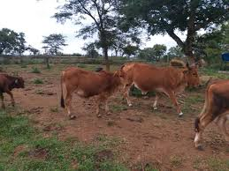

This is what l have been upto all week. I did a few practice projects and deployed them on liveserve.
This was the first one. I did it with my partner Wanzala. I was a bit lost and we had a zoom session where he walked me through the ke things and they suddenly made sense Pair partner work
Being my first deployed work, l was really excited however it was as basic as can get
I was surprised by some of it, however l knew l could do more
So l went ahead and delved further
The second one had more detail and made much more sense. First solo project
The excitement of this project was capped by my ability to actually do it alone, with great help from my notes and a summarised and simple video on youtube
People really underestimate the power of Youtube, however l just realised l may be pushing my own agenda of having Moringa School add more video classes to their lms
Anyway here goes my thrid one
This was a bit tricky as i did it amidst a power blackout that would not let me breathe
I am a farmer and l run a feedlot owned by my family.
I specialise in Boran cattle.The Boran developed into the dominant breed of Eastern Africa and especially in Kenya, where the Kenyan Boran Cattle Breeders' Society (BCBS) have bred the "Improved Boran" since the turn of the century
Boran cattle are quite hardy and prevalent to dry weather thats why the are ideal for my trade
On a normal day, my job is to make sure we have feed and water for the cattle and most important we have a ready market for them
On top of all this we have frequent buyers into the farm to purchase
I am a UoN Alumni with a background in Finance and l later joined , USIU AFrica for my MBA
By now you know l am practising my "linking" skills
I was a banker at Barclays Bank (now ABSA) for 6 years before l left to be self employed
The decison to quit my well paying job and venture into a very erratic market was faced with a lot of uncertainity and mixed feelings of fear and faith
But you know what they say, "don't let the fear of striking out keep you from playing the game"
so l took a leap of faith and did it
THe first year of business was baptism by fire but l finally managed to find my footing
I have always been curious about computer science and software development. However it has always been masked by the fear of failure
So in the middle of an outbreak ie COVID19 and the subsequent lockdown l decided this was a good time as any to challenge my self
SO here we are.